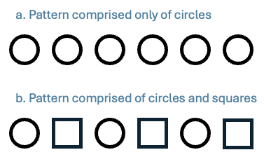

Open Music Theory：繁體中文版
樂句中段的自然音模進
重點整理
- 模進是將一個音樂型態移至不同音高後重複。
- 模進可分為上行與下行兩類。
- 下行模進包括：下行五度模進（五度循環）與下行三度模進（帕海貝爾）。
- 上行模進包括：上行 5–6 模進（上行級進）。
- 寫作模進時：
- 先寫出完整原型。
- 寫出第一次移位重複的完整第一個和弦。
- 依各聲部的音程型態，完成其餘的移位重複。
查看英文原文
Key Takeaways
- A sequence is a pattern that has been repeated and transposed
- There are two categories of sequences: ascending and descending.
- Descending sequences include: Descending fifths (circle-of-fifths) and Descending thirds (Pachelbel).
- Ascending sequences include: ascending 5-6 (ascending step).
- When writing a sequence:
- Write the whole model
- Write the entire first chord in copy 1
- Follow the pattern of intervals to complete the remaining copies
概述
模進（sequence）是將一個音樂型態移至不同音高後重複（例 1）。「原型」（model）指這個型態最初的呈現；「移位重複」（copy）則指其後的各次重複。模進的原型通常由兩個和弦及一條旋律構成；在後續的移位重複中，和弦與旋律都一起移至新的音高。也可能只有旋律，或只有和聲作模進；這時通常會明確稱為「旋律模進」或「和聲模進」。若只說「模進」，通常表示旋律與和聲都參與其中。
分析模進時，最具挑戰的工作之一，可能就是辨認原型及各次移位重複的範圍。初學者常把過短的片段認作原型，而這些片段其實不足以構成可辨認的型態。記住原型通常不只包含一個和弦，而且很常是兩個和弦，會很有幫助。例 2 說明原因：例 2a 的型態只有圓形，例 2b 則交替出現圓形與方形。在例 2b 中，很容易辨認重複的型態是「圓形—方形」；但例 2a 就不明確了：每次重複的是兩個圓形？三個？兩種都可以？究竟哪一組才是原型？

a. 僅由圓形構成的型態。
b. 由圓形與方形構成的型態。
例 2。兩種可能的重複型態。
模進可分為下行與上行兩大類。其中某些模進十分常見，因此有了專門的名稱；下文介紹最常見的幾種。不過，有兩點要強調：（1）模進不只有這幾種，只是這幾種特別常見；沒有特定名稱的模進，直接標為「上行模進」或「下行模進」即可。（2）可惜樂理對下列常見模進有許多不同命名方式。本章為每種列出兩個常見名稱，但其他命名方式也存在。
查看英文原文
Overview
A sequence is a pattern that has been repeated and transposed (Example 1). The term “model” refers to the initial statement of the pattern, and the term “copy” refers to subsequent repetitions of the pattern. Sequence models are typically comprised of a two-chord pattern and a melody, and both the chords and melody get transposed in subsequent copies of the pattern. It’s possible for only the melody or only the harmony to be sequential. In such cases we usually specify “melodic sequence” or “harmonic sequence.” When we just say “sequence” it usually means both melody and harmony participate.
Example 1. Two sequences in “Some People” from Gypsy (0:03–0:19)
Perhaps one of the most challenging tasks in analyzing sequences is determining where the model and its copies are. Beginning analysts often identify things that are too short to qualify as a model for a pattern. It can be helpful to remember that the model should usually contain more than one chord, very often two chords. Example 2 shows why. Example 2a shows a pattern comprised only of circles, whereas Example 2b shows a pattern that alternates circles and squares. In 2b, it’s easy to identify what the pattern is that’s being repeated (circle–square). In 2a it’s unclear: are two circles being repeated every time? Three? Both? What is the model?
Example 2.Two potential patterns.
We can divide sequences into two main categories: those that descend and those that ascend. Within each of those categories, certain sequences are so common that we have given them special names. The most common ones are covered below. It’s important to emphasize two things here, though: (1) these are not the only kinds of sequences. It’s just that these ones are quite common. Unnamed sequences can simply be labeled “ascending sequence” or “descending sequence”; (2) unfortunately, music theory has all kinds of different naming conventions for the common sequences below. We have chosen to give two common names for each one, but other naming conventions exist.
下行模進
查看英文原文
Descending sequences
下行五度模進（又稱五度循環模進）
下行五度模進是將兩個和弦構成的原型，逐次向下移動一級（例 3 與例 6）。之所以稱為「下行五度」，是因為相鄰和弦的根音依次下行五度，或上行四度；四度是五度的轉位音程。作曲家這麼做，是為了避免持續下行五度所造成的不合理大音域。例 3 的片段恰好全部使用自然音七和弦，但這種模進也可以只用三和弦，或每隔一個和弦才加入七音。有時作曲家不會像例 3 那樣全部使用原位，而會交替使用原位與第一轉位和弦（例 6d）。
查看英文原文
Descending fifths (a.k.a. circle-of-fifths)
Descending fifths sequences involve a two-chord model being transposed down by step (Examples 3 and 6). The sequence is called “descending fifths” because each successive chord root descends by fifth (or ascends by fourth—the inversion of a fifth. Composers do this to avoid writing an unreasonably large range which would happen if they kept descending by fifth). The excerpt in Example 3 happens to use all diatonic seventh chords, but the sequence can also happen with triads alone or with every other chord having a 7th. Sometimes, instead of using all root position chords, as in Example 3, composers choose to alternate root position and first inversion chords (Example 6d).
Example 3. A descending fifths sequence in Isaac Albéniz’s Catalonia, Rehearsal 34–36.(6:56–7:00)
下行三度模進（又稱帕海貝爾模進）
下行三度模進是將兩個和弦構成的原型，逐次向下移動三度，因此稱為「下行三度」（例 4 與例 7）。有些人則以帕海貝爾命名，因為他的〈D 大調卡農〉使用了這種模進的一個版本。這種模進常全部採用原位和弦（如例 7d），或交替使用原位與第一轉位和弦（如例 4）。
查看英文原文
Descending thirds (a.k.a Pachelbel)
Descending thirds sequences involve a two-chord model being transposed down by third (hence the name “descending thirds”) (Examples 4 and 7). Some people choose instead to call this sequence “Pachelbel” after his Canon in D, which features a version of the sequence. It’s common to see the sequence involve all root position chords (as in Example 7d) or alternating root position and first inversion chords (as in Example 4).
Example 4. A descending Thirds sequence in Amanda Maier’s Six Pieces for Violin, No. 6, mm. 162–169. (2:48–3:01)
上行模進
查看英文原文
Ascending sequences
上行 5–6 模進（又稱上行級進模進）
上行 5–6 模進在上方聲部使用所謂的「5–6 技法」延長單一和弦，藉此模擬兩個和弦的型態。這裡的 5–6 來自數字低音，意思很簡單：原本位於低音上方五度的聲部，移到低音上方六度。例 5 展示一個上行 5–6 模進，例 8c 則是該模進的和聲縮減譜，突顯女高音的 5–6 進行。請留意例 5：當五度移到六度時，我們可以選擇標上新的和弦。雖然我們偏好少用一些羅馬數字，仍另外提供一種分析，將每個可能的垂直音組合都標出來。
查看英文原文
Ascending 5–6 (a.k.a ascending step)
Ascending 5–6 sequences mimic a two-chord pattern by prolonging a single chord using something called “5–6 technique” in an upper voice. The 5–6 here comes from figured bass. It simply means a voice that is a fifth above the bass moves to a sixth above the bass. Example 5 shows an ascending 5–6 sequence and Example 8c shows a harmonic reduction of the sequence that highlights the 5-6 motion in the soprano voice. Notice in Example 5 that when the 5th moves to the 6th, we could decide to label a new chord. Although we prefer to use fewer Roman numerals, we’ve also shown an alternative analysis that labels every possible verticality.
Example 5. An ascending 5-6 sequence in Antonio Vivaldi’s Violin Concerto Op. 8, No. 4, II, mm. 11–13.(1:15–1:36)
模進的寫作
寫作模進最容易的方法，是先完成原型，再將聲部進行「複製貼上」到後續各次移位重複。請注意，移位重複必須呈現與原型相同的聲部進行，只是移至另一個音高位置；否則就不是模進。因此，必須再次檢查原型的寫作：原型裡的任何錯誤，都會在後續每次移位重複中再次出現。步驟如下：
- 寫出原型。
- 遵循一般的聲部寫作程序；女高音宜平順，避免過多跳進。
- 寫出第一次移位重複中，完整的第一個和弦。
- 照原型第一個和弦的聲部排列配置。例如，若原型第一個和弦的三音在女高音，每次移位重複的第一個和弦，也必須讓三音位於女高音。
- 辨認每個聲部（女高音、女低音、男高音、男低音）的音程型態，將這個型態一路複製到模進結束。
- 檢查最後一個和弦的聲部排列，是否與原型中相對應的和弦一致，就能快速確認是否寫對。
- 若在小調，記得只有當屬功能和弦解決到主和弦時，才升高第七級形成導音。
例 6–8 依照上述步驟，逐一示範本章介紹的各種模進。
例 6。下行五度模進的寫作。
例 7。下行三度模進的寫作。
例 8。上行 5–6 模進的寫作。
查看英文原文
Writing sequences
Writing sequences is easiest if you establish the model first and then “copy-and-paste” the voice leading for each subsequent copy. Note that your copy should exhibit the same voice leading as your model, but transposed to a different pitch level, otherwise it’s not a sequence. For that reason, it’s important that you double check the writing in the model. Any error that you make in the model will get repeated to all subsequent copies. The steps are:
- Write the model
- Follow the typical writing procedure here, and prefer a soprano that is smoother rather than leapy.
- Write the entire first chord of your first copy.
- Copy the exact same spacing from the first chord of your model. For instance, if the third of the chord is in the soprano in the model’s chord 1, then the third of the chord must also be in the soprano for every copy’s chord 1.
- Determine the pattern of intervals you’ve written for each voice (soprano, also, tenor, bass) and copy that pattern to the end of the sequence.
- You can check if you’ve done it right quickly by seeing if the spacing of the final chord matches its analogous partner in the model.
- If you’re in minor, remember to raise the leading tone only if a dominant-function chord is resolving to tonic.
Examples 6–8 walk through these steps for each of the sequences we’ve covered in this chapter.
Example 6. Writing descending fifths sequences.
Example 7. Writing descending thirds sequences.
Example 8. Writing ascending 5-6 sequences.